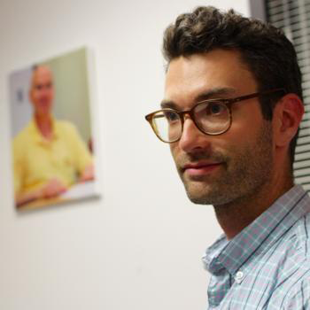
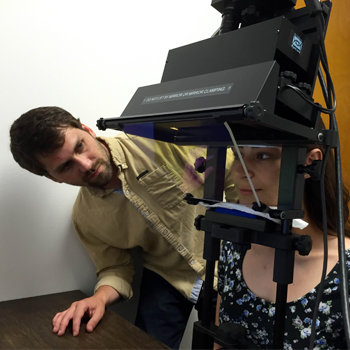
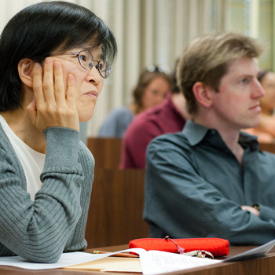
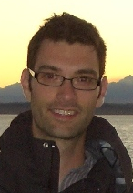
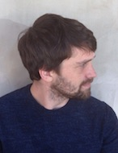
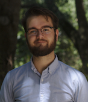
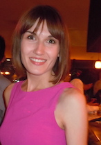
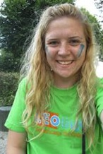

My primary research in language processing incorporates methods from cognitive science to investigate how language users develop a sufficiently rich linguistic meaning during online comprehension. I've pursued a language processing model that relies on structural heuristics to recover meaning when required, but which may elect to leave some aspects of a representation underspecificied, if doing so is grammatically possible and computationally efficient.
Beyond that, I am interested in many other areas of cognition, including how cognitive processes compete for limited attentional resources, and the structure of the mental lexicon. I also work in formal semantics and pragmatics.
http://www.linguistics.ucla/people/harris/
I'm a fourth year graduate student in UCLA's linguistics department. I use experimental methods to test theoretical predications pertaining to morphological and syntactic issues. My current interests focus on theories of phi-features and (A-)movement phenomena. Outside of experimental work, I am committed to using fieldwork to address questions of linguistic theory.
http://www.jgluckman.com/index.html
I'm a second year graduate student in UCLA's linguistics department. I use eye tracking to investigate the role of intonation in language processing. My current research interests include the connection between production and perception of contrastive focus pitch accents and the acquisition of L2 intonation.

I am a third-year transfer student who is majoring in Linguistics and Psychology. I'm engaged in investigating the cognitive processes governing language acquisition, speech perception, and lexical retrieval. Neurolinguistics is of special interest to me.
Among my non-academic activities are tennis, hip-hop choreography, cooking, and antiquing.

I'm a third year transfer student from Northern California, majoring in Linguistics and minoring in German. My research interests include syntax, second language accusation, language processing, and Germanic linguistics.
When I'm not in the lab, you can often find me sailing or dancing east coast swing.